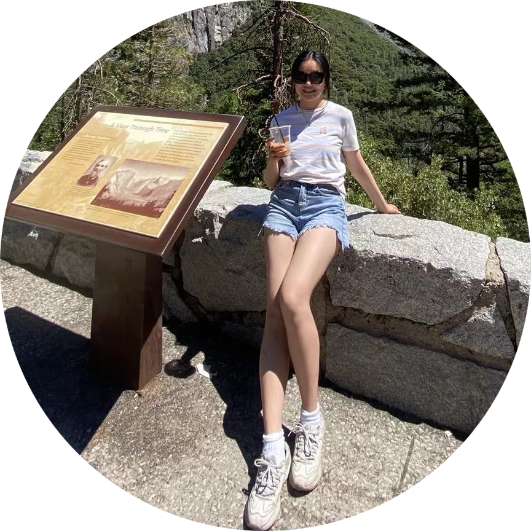

Siyu Sun

Introduction of myself
My name is Siyu Sun. I am a math major in University of California, Irvine and want to pursue a Master degree in Computer Science.
I know Python, Javascript, HTML, CSS, and SQL.
Contact information
Email: siyus6@uci.edu
Phone number: 9495723106
Courses that related to computer science
ICS 31: I learn Python in ICS31 class and I also later become learning assistant of ICS31.
Math 10: learn Python libraries
Math 9: Learn matlab and mathematica
ICS 6B: Boolean Algebra & Logic
ICS 6D: Discrete math in computer science
Math 3A: Linear Algebra
Math 105A: Numerical Analysis
Math 110A: Optimization
Math 130A: Probability
Math 199C: Symmedian point research
Courses I plan to take in Winter and Spring quarter
ICS 32: learn Python libraries
Compsci 125: learn Python libraries
ICS 33: learn Python libraries
Projects I have done by myslef
Siyu Sun's personal website
In Siyu Sun's personal website, I wrote brief introductions of myself, the courses I have attended,
the project that I do on my own to show my skills in programming, as well as activities in college and hobbies.
I taught myself html and css while building the personal website.
Siyu Sun's planner
In Siyu Sun's planner, there will be a login page, and after log in the account, there will be a planner
for one to write their goals for each day, each week, and each month, and allow one to select how much they have finished
their goals and the planner will calculate the completion rate for each day, week, and month.
Aim of the planner is to let people better manage their time and improve efficiency and can also act as a normal planner
to write down what they want to do and what they have done.
I am a learning assistant for ICS31 in Fall 2022. I help collect the exam each Tuesday and help with formative assessment, which students work in a group in class.
I also have support hours on Monday and Wednesday so that students can come and ask me questions.